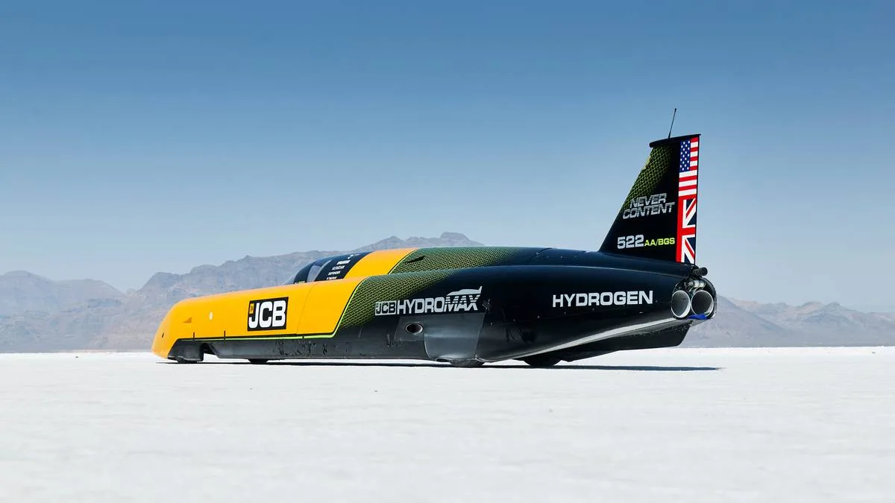
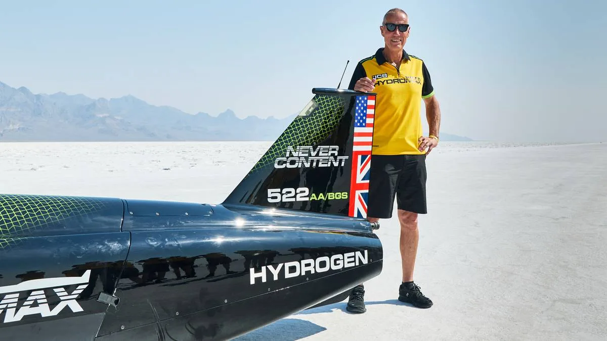
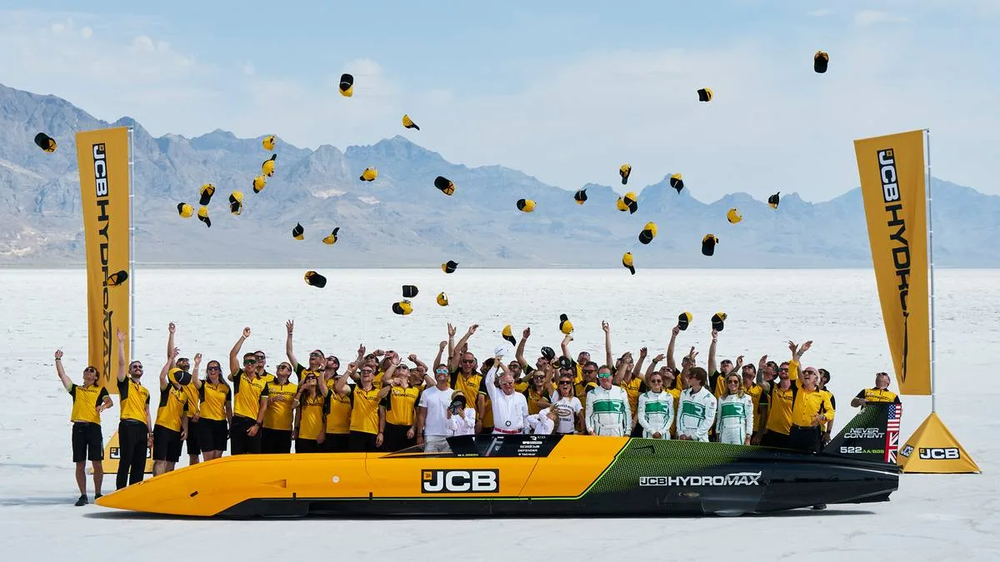

▲ JCB 하이드로맥스. 수소연소 엔진을 탑재한 이 차량이 본네빌 솔트플랫에서 새로운 육상속도기록을 세웠다
영국 건설장비 제조업체 JCB가 자체 개발한 수소연소 엔진 차량 '하이드로맥스(Hydromax)'로 새로운 육상속도기록을 세웠습니다. 미국 유타주 본네빌 솔트플랫에서 진행된 이번 도전에서, 하이드로맥스는 평균 시속 406.320마일을 기록했습니다. 흥미로운 점은 이 기록이 JCB 스스로 나흘 전인 8월 7일에 세운 시속 368.347마일 기록을 자기 손으로 갈아치운 결과라는 것입니다.
1. 배터리가 아닌 '수소를 태우는' 엔진
하이드로맥스가 특별한 이유는 수소를 연료전지로 쓰는 것이 아니라, 말 그대로 실린더 안에서 '태우는' 방식이기 때문입니다. 트윈 터보차징 수소연소 내연기관 두 개를 탑재해 합산 1,600마력을 냅니다. 두 개의 트랜스미션과 클러치를 통해 네 바퀴 모두에 동력을 전달하며, 터보차저는 분당 15만 회전 이상을 돌아갑니다. 극한의 출력을 견디기 위해 피스톤 냉각에만 매초 1리터의 냉각유가 필요할 정도로, 기존 내연기관의 한계를 시험하는 극단적인 엔지니어링이 동원됐습니다.

▲ 본네빌 솔트플랫을 질주하는 하이드로맥스. 트윈 터보차징 수소연소 엔진 2기로 합산 1,600마력을 낸다
2. 4일 만에 자기 기록을 스스로 갈아치우다
이번 기록의 진짜 흥미로운 지점은 JCB가 '경쟁자'가 아니라 '자기 자신'을 이겼다는 것입니다. 8월 7일 처음 세운 시속 368.347마일 기록도 이미 종전 세계 기록인 348.342마일(2010년 스펙트르 스트림라이너 기록)을 넘어선 성과였습니다. 그런데 JCB는 여기서 멈추지 않고 나흘 뒤인 8월 11일 다시 도전에 나서, 시속 406.320마일까지 기록을 끌어올렸습니다. 한 번의 기록 경신에 만족하지 않고 곧바로 재도전해 스스로를 뛰어넘은 셈입니다.
| 시점 | 기록 |
|---|---|
| 2010년(종전 기록) | 시속 348.342마일 |
| 2026년 8월 7일(1차 도전) | 시속 368.347마일 |
| 2026년 8월 11일(2차 도전) | 시속 406.320마일 |
| 4일간 기록 향상폭 | 약 38마일 |

▲ 본네빌 솔트플랫 현장. 육상속도기록의 상징적 장소로 꼽히는 이곳에서 JCB의 도전이 이뤄졌다
3. 왜 굴착기 회사가 속도기록에 도전했나
역대 최고 육상속도기록을 보유한 파일럿 앤디 그린은 본네빌 솔트플랫을 "세계 육상속도기록의 영적 본거지"라고 표현한 바 있습니다. JCB가 이곳을 무대로 택한 것도 이런 상징성과 무관하지 않습니다. 건설장비 제조업체로서 JCB의 목표는 단순한 기록 경신이 아니라, 자사의 엔지니어링 역량을 입증하고 수소 연소 기술의 실행 가능성을 세상에 증명하는 것이었습니다. 전기차 배터리 기술이 주목받는 시대에, 수소를 직접 연소시키는 내연기관 방식도 여전히 극한의 성능을 낼 수 있다는 것을 보여준 셈입니다.

▲ 고속 주행 중인 하이드로맥스. 터보차저는 분당 15만 회전 이상을 돌며 극한의 출력을 뽑아낸다
4. 정리 — 수소 내연기관의 새로운 가능성
전동화가 자동차 산업의 대세로 자리 잡은 가운데, JCB의 이번 기록은 수소를 활용하는 또 다른 경로가 여전히 유효하다는 것을 보여줍니다. 연료전지가 아닌 연소 방식의 수소 엔진은 상용화까지 넘어야 할 산이 많지만, 이번 사례처럼 극한 조건에서 기술적 가능성을 증명하는 시도들이 쌓이면서 관련 기술의 발전 속도도 빨라질 것으로 보입니다. 굴착기로 유명한 회사가 세계 육상속도기록의 역사에 이름을 남겼다는 사실 자체가, 이 산업이 얼마나 예측 불가능한 방향으로 발전하고 있는지를 보여주는 상징적인 장면입니다.